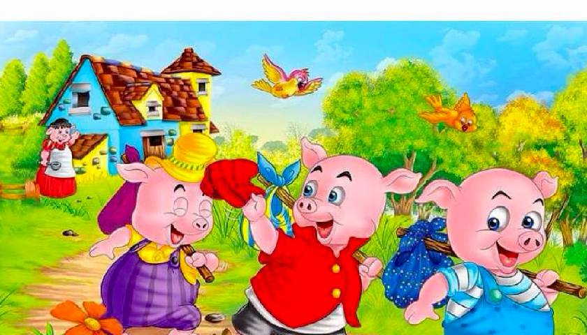
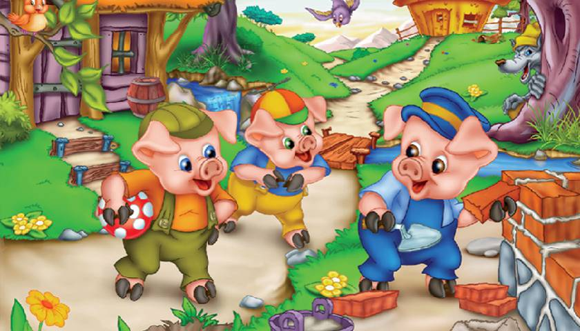

Three Little Pigs

Long Long ago, a family of 3 pigs are sent out into the forest to seek out their own fortune. The first pig sets out and builds a house of Straw. I takes him one day and he thinks its easy. The Second pig builds a house of sticks. It takes him 4 days but he like the look of his house . The third pig decides to build his house made of bricks. It takes him 2 months. They all live not very far from each other in the forest.
很久很久以前，来自一家的三只小猪被送到了森林去寻找自己的财富。第一只小猪出发后建了一个稻草屋，建稻草屋花了一天的时间它觉得很容易。第二只小猪用木头建了房子。它虽然花了四天的时间去建那个房子但是他很喜欢那个房子的样子。第三只小猪决定用砖块建它的房子。它花了两个月的时间。在森林里它们住的地方离得很近。

One day a big hungry wolf comes to the First house made of straw. He asked the pig, “little pig, Little pig, let me in.”
The pig responded , “no! not by the hairs on my chinny chin chin.”
The wolf got angry and said “Then I will huff and puff and blow your house in!”
The Wolf blew hard and the straw house blew away!”
The little pig ran all the way to his brothers house, Which was made of sticks but the wolf followed him !
一天有只饥饿的大狼去了第一用稻草做的房子。他对那只小猪说:“小猪,小猪，让我进来吧”
三只小猪回答说；“那是不可能的事！”
大灰狼很生气地说：“那我就吹倒你的房子！”
然后大灰狼狠狠地吹了一下，稻草屋就这样被吹走了!
那只小猪费尽全力跑到它兄弟的木棍房子，但是那只大灰狼一直跟着它。